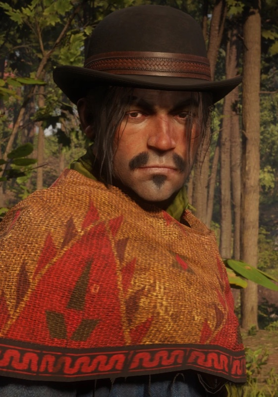
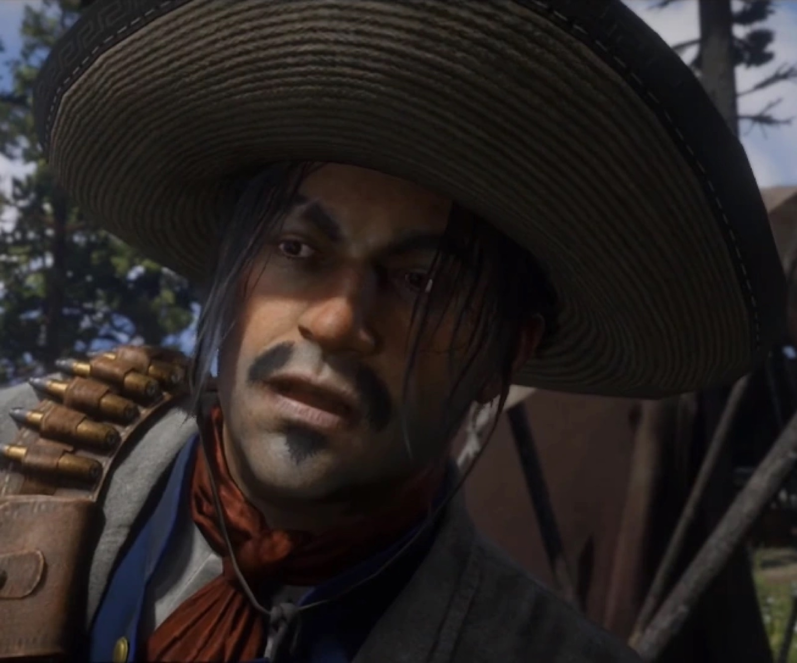
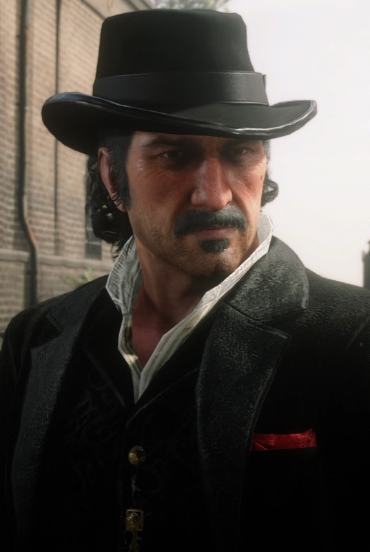
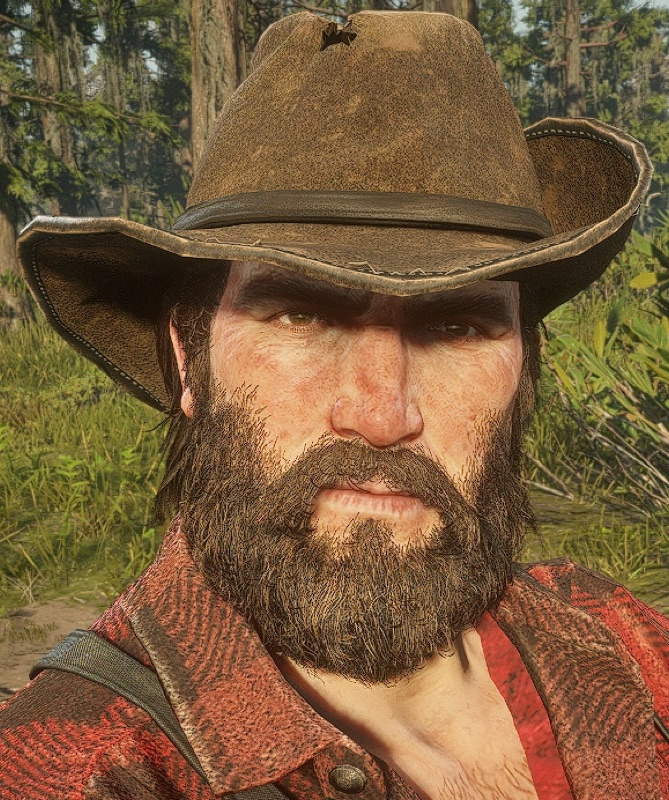
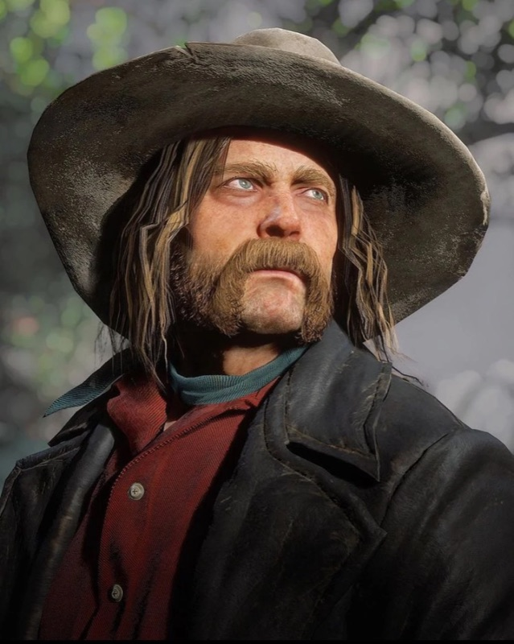

Character · Van der Linde gang
Javier Escuella
Javier Escuella is a loyal, talented Mexican gunman of the Van der Linde gang and, years later, one of the outlaws a coerced John Marston must hunt in the original Red Dead Redemption. A fugitive from Mexico who found a home with Dutch, Javier prizes loyalty above almost everything.
In Red Dead Redemption 2 he stands among Dutch's most devoted followers; by 1911 that loyalty has carried him back to Mexico and into John's sights.
- Died
- 1911
- Status
- Deceased
- Origin
- Mexican
- Affiliation
- Van der Linde gang
- Role
- Gunman
- Games
- Red Dead Redemption, Red Dead Redemption 2
Biography
A fugitive finds a family
Javier fled Mexico after turning on a corrupt official, and found belonging in the Van der Linde gang, where his skill with a gun and his loyalty quickly made him valued. He is a true believer in Dutch's vision of freedom.

Back to Mexico, 1911
When the gang falls, Javier stays loyal to Dutch and eventually returns to Mexico. There, in 1911, John Marston, forced by government agents, tracks down his former gang brother, and Javier's long run finally ends.
Personality
Javier is proud, passionate and intensely loyal, a romantic who loves music as much as he respects a good gun. That same loyalty becomes his weakness: he follows Dutch even as Dutch loses his way.
Relationships

Dutch van der Linde
The leader Javier follows with near-total devotion, staying loyal long after others have run.

John Marston
A former gang brother who, in 1911, is forced to hunt Javier down in Mexico.

Bill Williamson
A fellow loyalist and another of John's Mexican targets; the two outlaws share a similar fate.

Arthur Morgan
A fellow gunman in the 1899 gang, working alongside Javier through its final year.

Micah Bell
A late arrival Javier ends up siding with among Dutch's loyalists as the gang splinters.
Death and fate
By 1911, Javier is hiding in the Mexican territory of Nuevo Paraíso, like Bill Williamson before him. John Marston, sent to bring in his old associates, catches up with him there, and Javier's story ends far from the gang that gave him a home.
Behind the scenes
Reception and legacy
Javier is a memorable example of the series' bridging of its two eras, his loyalty making his eventual fate genuinely sad. Fans value him as one of the gang members whose RDR2 portrayal recoloured the original game.
Trivia
- Javier appears in both Red Dead Redemption and Red Dead Redemption 2.
- He fled Mexico after turning against a corrupt official.
- He loves music and is often associated with the guitar.